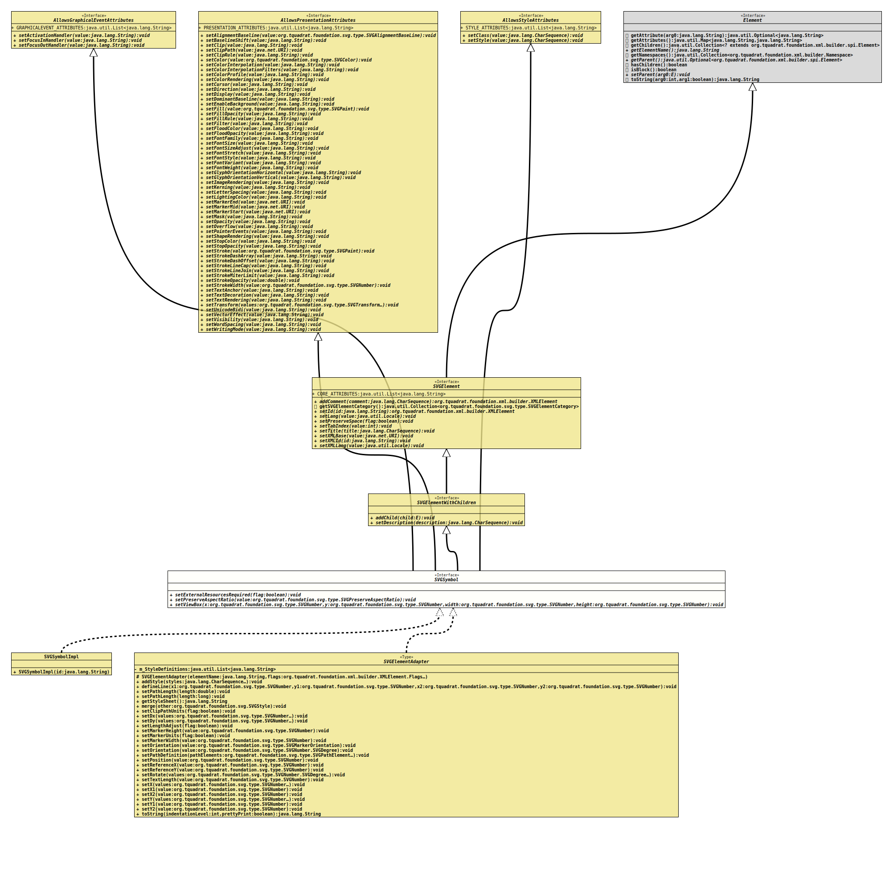

- All Superinterfaces:
AllowsGraphicalEventAttributes,AllowsPresentationAttributes,AllowsStyleAttributes,Element,SVGElement,SVGElementWithChildren
- All Known Implementing Classes:
SVGElementAdapter,SVGGenericElement,SVGSymbolImpl
@ClassVersion(sourceVersion="$Id: SVGSymbol.java 1074 2023-10-02 12:05:06Z tquadrat $")
@API(status=STABLE,
since="0.0.5")
public sealed interface SVGSymbol
extends SVGElementWithChildren, AllowsGraphicalEventAttributes, AllowsPresentationAttributes, AllowsStyleAttributes
permits SVGElementAdapter, SVGSymbolImpl
{kind=link}
The definition of the SVG element
A
<symbol>. A
<symbol> element is useless without the attribute id
set; therefore it is required already on creation and will not appear in
this interface.- Author:
- Thomas Thrien (thomas.thrien@tquadrat.org)
- Version:
- $Id: SVGSymbol.java 1074 2023-10-02 12:05:06Z tquadrat $
- Since:
- 0.0.5
- See Also:
-
SVGUtils.createSymbol(String)SVGUtils.createSymbol(String,SVG)- "https://www.w3.org/TR/SVG/single-page.html#struct-SVGElement"
- UML Diagram
-

UML Diagram for "org.tquadrat.foundation.svg.SVGSymbol"
){kind=link}
{kind=link}
-
Field Summary
Fields inherited from interface org.tquadrat.foundation.svg.AllowsGraphicalEventAttributes
GRAPHICALEVENT_ATTRIBUTESFields inherited from interface org.tquadrat.foundation.svg.AllowsPresentationAttributes
PRESENTATION_ATTRIBUTESFields inherited from interface org.tquadrat.foundation.svg.AllowsStyleAttributes
STYLE_ATTRIBUTESFields inherited from interface org.tquadrat.foundation.svg.SVGElement
CORE_ATTRIBUTES -
Method Summary
Modifier and TypeMethodDescriptionvoidsetExternalResourcesRequired(boolean flag) Sets the attribute that indicates whether external resources are required to render this<symbol>element.voidSets the mode for the aspect ratio preservation for this<symbol>element.voidsetViewBox(SVGNumber x, SVGNumber y, SVGNumber width, SVGNumber height) Defines the visible area for this<symbol>element.Methods inherited from interface org.tquadrat.foundation.svg.AllowsGraphicalEventAttributes
setActivationHandler, setFocusInHandler, setFocusOutHandlerMethods inherited from interface org.tquadrat.foundation.svg.AllowsPresentationAttributes
setAlignmentBaseline, setBaselineShift, setClip, setClipPath, setClipRule, setColor, setColorInterpolation, setColorInterpolationFilters, setColorProfile, setColorRendering, setCursor, setDirection, setDisplay, setDominantBaseline, setEnableBackground, setFill, setFillOpacity, setFillRule, setFilter, setFloodColor, setFloodOpacity, setFontFamily, setFontSize, setFontSizeAdjust, setFontStretch, setFontStyle, setFontVariant, setFontWeight, setGlyphOrientationHorizontal, setGlyphOrientationVertical, setImageRendering, setKerning, setLetterSpacing, setLightingColor, setMarkerEnd, setMarkerMid, setMarkerStart, setMask, setOpacity, setOverflow, setPointerEvents, setShapeRendering, setStopColor, setStopOpacity, setStroke, setStrokeDashArray, setStrokeDashOffset, setStrokeLineCap, setStrokeLineJoin, setStrokeMiterLimit, setStrokeOpacity, setStrokeWidth, setTextAnchor, setTextDecoration, setTextRendering, setTransform, setUnicodeBidi, setVectorEffect, setVisibility, setWordSpacing, setWritingModeMethods inherited from interface org.tquadrat.foundation.svg.AllowsStyleAttributes
setClass, setStyleMethods inherited from interface org.tquadrat.foundation.xml.builder.spi.Element
getAttribute, getAttributes, getChildren, getElementName, getNamespaces, getParent, hasChildren, isBlock, setParent, toStringMethods inherited from interface org.tquadrat.foundation.svg.SVGElement
addComment, getSVGElementCategory, setId, setLang, setPreserveSpace, setTabIndex, setTitle, setXMLBase, setXMLId, setXMLLangMethods inherited from interface org.tquadrat.foundation.svg.SVGElementWithChildren
addChild, setDescription
){kind=link}
){kind=link}
){kind=link}
){kind=link}
){kind=link}
){kind=link}
){kind=link}
){kind=link}
-
Method Details
-
setExternalResourcesRequired
Sets the attribute that indicates whether external resources are required to render this<symbol>element.- Parameters:
flag-trueif external resources are needed,falseif all required resources are local to the current context.
-
setPreserveAspectRatio
Sets the mode for the aspect ratio preservation for this<symbol>element.- Parameters:
value- The type; ifnullthe attribute will be removed.
-
setViewBox
Defines the visible area for this<symbol>element.- Parameters:
x- The x coordinate of top left corner of the area.y- The y coordinate of top left corner of the area.width- The width of the area.height- The height of the area.
-
{kind=link}
{kind=link}
{kind=link}